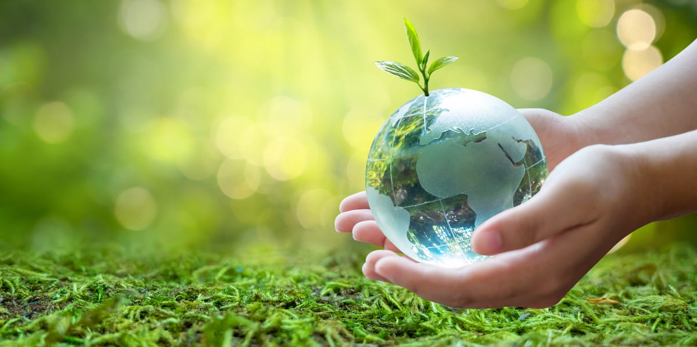
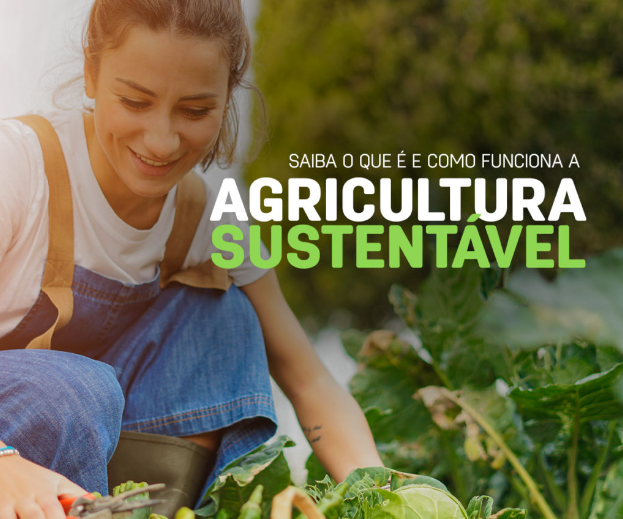
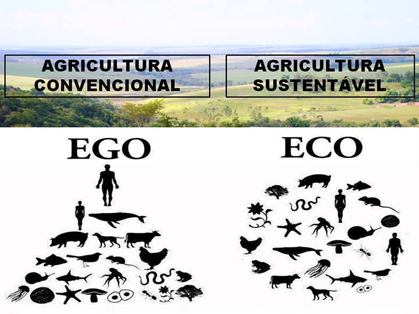

Conceitos basicos de Agricultura Sustentável

A agricultura sustentável visa suprir as necessidades atuais sem comprometer o futuro, preservando recursos e protegendo o meio ambiente. Isso é alcançado por meio de práticas que promovem eficiência, diversificação, minimização de impactos e respeito à biodiversidade.
Além disso, busca-se o desenvolvimento econômico e social das comunidades agrícolas, valorizando a participação dos agricultores e promovendo sistemas agroecológicos, agricultura familiar, condições de trabalho justas e educação agrícola. A agricultura sustentável busca o equilíbrio entre produção de alimentos e limites ecológicos, criando um sistema resiliente para o futuro.
Exemplos de praticas agrículas

Existem várias práticas agrícolas sustentáveis que podem ser adotadas. Entre elas estão o uso de técnicas de conservação do solo, como rotação de culturas e plantio direto, o manejo integrado de pragas e doenças, o uso responsável de fertilizantes e agroquímicos, e a implementação de sistemas agroflorestais.
Outras práticas incluem o uso eficiente da água por meio de irrigação por gotejamento ou técnicas de agricultura de precisão, a reciclagem de resíduos orgânicos para adubação, a proteção de áreas de preservação ambiental, a diversificação de culturas e a promoção da agricultura familiar e de mercados locais para reduzir a dependência de grandes distâncias de transporte de alimentos.
Agricultura eficiente

Agricultura eficiente e de baixo impacto ambiental pode ser alcançada através de diversas práticas. Isso inclui o uso de técnicas de conservação do solo, como terraceamento e plantio direto, que evitam a erosão e aumentam a capacidade de retenção de água. Além disso, o manejo integrado de pragas e doenças, por meio de monitoramento e controle biológico, reduz a necessidade de agroquímicos.
Outras estratégias incluem o uso responsável de fertilizantes, com base na análise do solo, e a adoção de práticas de rotação de culturas, que melhoram a fertilidade e reduzem a incidência de doenças. A implementação de sistemas agroflorestais, que combinam cultivos agrícolas com árvores, promove a biodiversidade e contribui para a conservação dos recursos naturais. Essas práticas, combinadas com tecnologias de agricultura de precisão e o uso eficiente de recursos hídricos, contribuem para uma agricultura mais produtiva e sustentável.